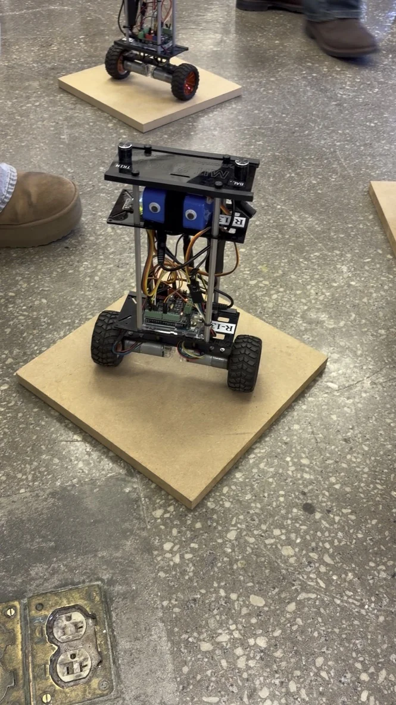
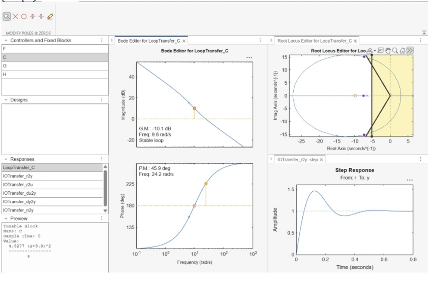

Stabilizing a robot with PID control
Using PID feedback and MATLAB control-design tools to stabilize a physical robot, then observing how the controller behaves in practice.

A physical balancing robot resting on its test platform · Click image to enlarge
The objective
This 2.004 project brought feedback-control theory into a physical system: keep a robot stable using a PID controller. I worked with the model and controller response, then compared the behavior with the actual robot on its test platform.
Control design
The MATLAB control-design plots show how the frequency response, stability margins, pole locations, and step response inform controller tuning. We used PID control and adjusted the system to achieve a stable response. The project connected classroom concepts, such as phase margin and transient response, to hardware behavior.
Physical demonstration
The clip below shows the robot stabilizing on a wooden platform. It is a short demonstration rather than a quantitative characterization, but it makes the feedback-control result visible.
Takeaway
The most useful part was seeing that a controller is only as good as its behavior on the real system. It made me appreciate both mathematical modeling and hands-on testing.
Short project demonstration of the self-stabilizing robot under PID control.
Project imagery
